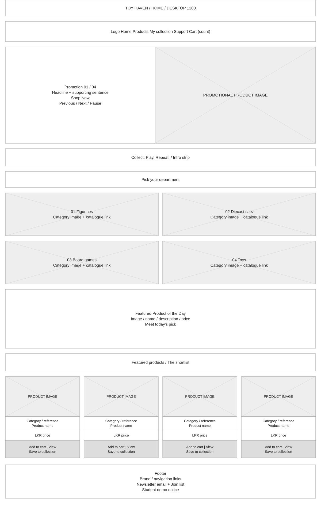

Catalogue update: product cards repeat for 16 products, four per category. The Home department images are contained above separate caption strips in the current implementation; these earlier low-fidelity layouts retain their original planning geometry.
Twelve low-fidelity layouts for six pages. Desktop is 1200 pixels; mobile is 390 pixels. Boxes describe content and behaviour; they are not product screenshots.
Edit: open Toy_Haven_All_Wireframes.drawio in diagrams.net using File → Open from → Device. Each layout has its own tab; all shapes and labels are editable. SVGs can also be imported into Figma; use draw.io for reliable text editing.
Mobile starts with one column and a collapsible menu. At 600px cards use two columns. At 900px navigation becomes horizontal, cards use four columns and forms sit beside summaries. At 1000px the Home hero places text beside its image. Footers stack on small screens.
These wireframes document the revised implementation. They should not be described as an untouched record of planning before any code existed. Revise them to reflect your own design decisions.
